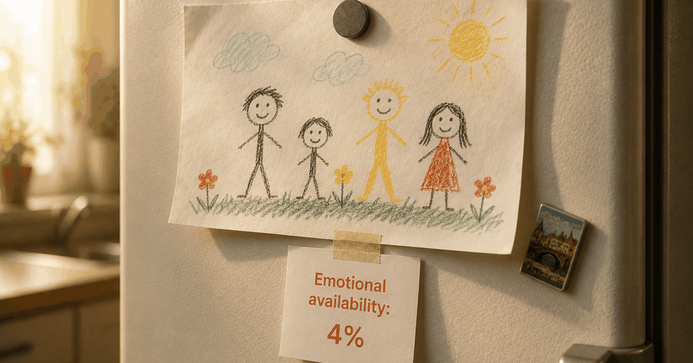

 IY
IYA note from Ivan — "Burnout" gets thrown around loosely, so here's the careful version: what the term actually means in the research, what it doesn't, and where the evidence on fathers is still thin. Why trust us.
Dad burnout is real, and it's not the same as being weak or being depressed. Parental burnout is a recognized syndrome with three signs: bone-deep exhaustion in your parenting role, emotionally distancing from your kids, and a painful sense that you've lost the parent you meant to be. A 2024 systematic review estimates it hits about 5% of parents worldwide, rising to ~9% in Western countries (BMC Public Health). It's reversible — and naming it is where recovery starts.
You love your kid. You'd walk into traffic for them. And driving home tonight, you felt… nothing. Just a low hum of "get through it," the same as yesterday.
That gap — loving them completely and feeling empty toward the role — is the thing men rarely say out loud. It sounds monstrous. It isn't. It has a name, a research literature, and a way out.
Let me decode what the science actually says, including the parts that are still uncertain.
What parental burnout actually is
Parental burnout is a distinct syndrome — not just tiredness — defined by researchers Isabelle Roskam and Moïra Mikolajczak around three components: overwhelming exhaustion in the parenting role, emotional distancing from your children, and a sharp contrast between the parent you are now and the parent you used to be or wanted to be. It's chronic parenting stress that has tipped past the point of recovery.
The key word is role-specific. This isn't feeling wiped out in general. It's a depletion aimed precisely at parenting — the one place you most want to show up, and the one place the tank reads empty.
That emotional distancing is the cruelest part. You start operating your kids on autopilot: feed, change, bathe, repeat, with the warmth switched off. Not because you stopped loving them — because there's nothing left to run the warmth on.
Parental burnout is a unique condition resulting from chronic parenting stress — marked by exhaustion, emotional distancing from one's children, and a loss of parental fulfillment.After Roskam & Mikolajczak, developers of the Parental Burnout Assessment
of parents experience parental burnout — around 5% worldwide, rising to roughly 9% in Western countries, per a 2024 systematic review. Higher in some stressed subgroups.
Why it's different from depression (and why that matters)
Burnout is confined to your parenting role; depression bleeds into everything. You can be burnt out as a dad and still enjoy a match with friends — the emptiness is domain-specific. Depression, by contrast, greys out the whole picture. The distinction isn't academic: it points to different help. Burnout often eases with real rest and a shared load; depression usually needs treatment.
This is why "just push through" is bad advice for both. Push through burnout and you deepen the exhaustion. Push through depression and you delay care you actually need.
A 2025 review described parental burnout as a progressive condition — it worsens if the pressures that caused it don't change (Healthcare, 2025). It doesn't tend to fix itself. It waits.
Why dads miss it in themselves
Fathers under-recognize burnout because the culture gives them no permission to feel depleted by fatherhood, so it surfaces sideways — as irritability, withdrawal or shutting down rather than a clear "I'm burnt out." Research on new fathers finds that men often can't name their distress, so it shows up as anger and emotional shutdown instead.
The result is a dangerous lag. Studies of fathers seeking perinatal mental-health support find they tend to arrive later and in deeper crisis than mothers — the silence lets things escalate before anyone acts.
If you've been reading yourself as "just stressed" or "a bit checked out," it's worth taking seriously. That flatness is often the same distance behind the loneliness so many new dads describe — and it rarely lifts on its own.
Honest limits. Two things to keep straight. First, prevalence numbers move around a lot depending on the country and the questionnaire used, so treat "5–9%" as a ballpark, not a fixed fact. Second, most parental-burnout research has studied mothers; father-specific data is real but still thinner, and some of what we assume about dads is extrapolated. The construct is solid; the precise male numbers are still filling in.
How dads come back
Recovery isn't doing parenting more efficiently — it's restoring what burnout stripped: rest, a self beyond "dad," and a shared load. Name it as burnout (not weakness), protect one genuinely off block a week, reclaim a sliver of your pre-parent self, and say the load out loud so it gets rebalanced. If it tips into all-day, everyday flatness, get professional help.
- Name it as burnout, not weakness. The three signs are a known syndrome, not a verdict on you. Naming it is the first move out.
- Restore one real off-shift. Burnout runs on relentlessness. Claim one truly off block a week — no baby, no chores, no guilt — and give your partner the same.
- Reconnect with who you were. One thing that isn't parenting: a run, a friend, a hobby. A sliver of your old self is medicine, not selfishness.
- Share the load out loud. Burnout thrives in silence and solo effort. Say what you're carrying; ask to rebalance one concrete thing.
- Get help if it tips into depression. All-day flatness for two weeks or hopelessness is past burnout — talk to a professional. Both are treatable.
The hardest step is the first one, and it's the whole game: saying it out loud. Burnout survives on the story that a good dad wouldn't feel this way — so you carry it alone, which is exactly the condition that makes it worse. The way back runs through being seen, by your partner or a professional, not through gritting harder.
Frequently asked questions
Is dad burnout a real thing?
Yes. Parental burnout is a recognized syndrome, distinct from ordinary tiredness, defined by researchers Isabelle Roskam and Moïra Mikolajczak. It has three core signs: overwhelming exhaustion in your parenting role, emotionally distancing from your children, and a sense of being a worse or lost version of the parent you meant to be. It affects fathers as well as mothers, though dads report it far less.
What are the signs of parental burnout in dads?
Three hallmarks: bone-deep exhaustion specifically tied to parenting, emotional distancing from your kids (going through the motions, feeling numb toward them), and a painful contrast with the parent you used to be or hoped to be. In fathers it often surfaces as irritability, withdrawal or shutting down rather than open sadness.
How common is parental burnout?
A 2024 systematic review found that around 5% of parents worldwide experience parental burnout, rising to roughly 9% in Western countries — and higher in some stressed subgroups. Prevalence estimates vary by country and by how burnout is measured, and father-specific data is still thinner than data on mothers.
Is dad burnout the same as depression?
No, though they can overlap. Burnout is specific to your parenting role — you can feel empty as a parent while still functioning elsewhere. Depression is broader and colors everything, everywhere. The distinction matters because it points to different help: burnout often eases with real rest and a shared load, while depression usually needs professional treatment. If low mood is constant across your whole life for two weeks or more, treat it as more than burnout and talk to a professional.
How do dads recover from burnout?
Name it as burnout rather than weakness, protect one genuinely off block of time a week, reconnect with a sliver of your pre-parent self, and share the load out loud so it's rebalanced rather than silently absorbed. If it tips into persistent hopelessness or daily flatness, get professional support. Recovery is real, but it needs actual recovery, not just doing more efficiently.
Keep readingLonely as a new dad? Why it happens and what helps · When 'not now' starts to feel like rejection · How relationships actually work after a baby
Prof. Dr. in AI and Regular's research lead. Writes "The Science, decoded" — the evidence read closely, with the honest limits kept in.
About Regular — the relationship app for new dads, built by a small team of parents who needed it themselves. Small, science-backed moves with your partner, not big talks.